7.1 Introduction
Chebfun has powerful capabilities for solving ordinary differential equations as well as partial differential equations involving one space and one time variable. The present chapter is devoted to chebops, the fundamental Chebfun tools for solving differential (or integral) equations. In particular we focus here on the linear case. We shall see that one can solve a linear two-point boundary value problem to high accuracy by a single backslash command. Nonlinear extensions are described in Section 7.9 and in Chapter 10, and for PDEs, try help pde15s.
A book about ODEs in Chebfun is in preparation [Trefethen, Birkisson & Driscoll 2016].
Although one or two examples of initial-value problems for ODEs are presented in this chapter, the emphasis is on boundary-value problems. Beginning with Version 5.1 in December 2014, Chebfun switched to time-stepping methods as the default for initial value problems, a big improvement in speed and robustness in the nonlinear case. See Chapter 10.
7.2 About linear chebops
A chebop represents a differential or integral operator that acts on chebfuns. This chapter focusses on the linear case, though from a user's point of view, linear and nonlinear problems are quite similar. One thing that makes linear operators special is that eigs and expm can be applied to them, as we shall describe in Sections 7.5 and 7.6.
Like chebfuns, chebops start from premise of approximation by piecewise polynomial interpolants; in the context of differential equations, such techniques are called spectral collocation methods. As with chebfuns, the discretizations are chosen automatically to achieve high accuracy. In fact, beginning with version 5, Chebfun actually offers two different methods for solving these problems, which go by the names of rectangular collocation (or Driscoll-Hale) spectral methods and ultraspherical (or Olver-Townsend) spectral methods. See Sections 7.7 and 8.10.
The linear part of the chebop package was conceived at Oxford by Bornemann, Driscoll, and Trefethen [Driscoll, Bornemann & Trefethen 2008], and the original implementation was due to Driscoll, Hale, and Birkisson [Birkisson & Driscoll 2011, Driscoll & Hale 2014]. Much of the functionality of linear chebops is actually implemented in various classes built around the idea of what we call a "linop", but users generally do not deal with linops and related structures directly.
7.3 Chebop syntax
A chebop has a domain, an operator, and sometimes boundary conditions. For example, here is the chebop corresponding to the second-derivative operator on $[-1,1]$:
L = chebop(-1, 1); L.op = @(x,u) diff(u,2);
(For scalar operators like this, one may dispense with the x and just write L.op = @(u) diff(u,2).) This operator can now be applied to chebfuns defined on $[-1,1]$. For example, taking two derivatives of $\sin(3x)$ multiplies its amplitude by 9:
u = chebfun('sin(3*x)');
norm(L(u), inf)
ans = 9.000000000000064
Both the notations L*u and L(u) are allowed, with the same meaning.
min(L*u)
ans = -9.000000000000064
Mathematicians generally prefer to write $Lu$ if $L$ is linear and $L(u)$ if it is nonlinear.
A chebop can also have left and/or right boundary conditions. For a Dirichlet boundary condition it's enough to specify a number:
L.lbc = 0; L.rbc = 1;
More complicated boundary conditions can be specified with anonymous functions, which are then forced to take zero values at the boundary. For example, the following sequence imposes the conditions $u=0$ at the left boundary and $u'=1$ at the right:
L.lbc = @(u) u; L.rbc = @(u) diff(u) - 1;
We can see a summary of L by typing the name without a semicolon:
L
L =
Linear operator:
u |--> diff(u,2)
operating on chebfun objects defined on:
[-1,1]
with
left boundary condition(s):
u = 0
right boundary condition(s):
diff(u)-1 = 0
Boundary conditions are needed for solving differential equations, but they have no effect when a chebop is simply applied to a chebfun. Thus, despite the boundary conditions just specified, L*u gives the same answer as before:
norm(L*u, inf)
ans = 9.000000000000064
When values and derivatives are both to be specified at a single boundary for a scalar ODE, a simpler syntax is also available: instead of writing, say,
L.lbc = @(u) [u-2, diff(u)-3];
one can write
L.lbc = [2; 3];
Here is an example of an integral operator, the operator that maps $u$ defined on $[0,1]$ to its indefinite integral:
L = chebop(0, 1); L.op = @(x,u) cumsum(u);
For example, the indefinite integral of $x$ is $x^2/2$:
x = chebfun('x', [0, 1]);
LW = 'linewidth';
hold off, plot(L*x, LW, 2), grid on
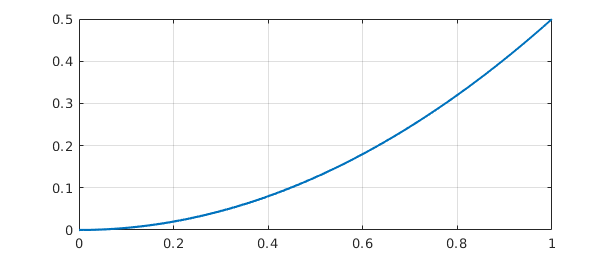
Chebops can be specified in various ways, including all in a single line. For example we could write
L = chebop(@(x,u) diff(u) + diff(u,2), [-1, 1])
L =
Linear operator:
u |--> diff(u)+diff(u,2)
operating on chebfun objects defined on:
[-1,1]
Or we could include boundary conditions:
L = chebop(@(x,u) diff(u) + diff(u,2), [-1, 1], 0, @(u) diff(u))
L =
Linear operator:
u |--> diff(u)+diff(u,2)
operating on chebfun objects defined on:
[-1,1]
with
left boundary condition(s):
u = 0
right boundary condition(s):
diff(u) = 0
For operators applying to more than one variable (needed for solving systems of differential equations), see Section 7.8.
7.4 Solving differential and integral equations
In MATLAB, if A is a square matrix and b is a vector, then the command x=A\b solves the linear system of equations $Ax=b$. Similarly in Chebfun, if L is a differential operator with appropriate boundary conditions and f is a Chebfun, then u=L\f solves the differential equation $L(u)=f$. More generally L might be an integral or integro-differential operator. (Of course, just as you can solve $Ax=b$ only if $A$ is nonsingular, you can solve $L(u)=f$ only if the problem is well-posed.)
For example, suppose we want to solve the differential equation $u''+x^3u = 1$ on the interval $[-3,3]$ with Dirichlet boundary conditions. Here is a Chebfun solution:
L = chebop(-3, 3); L.op = @(x,u) diff(u,2) + x.^3.*u; L.lbc = 0; L.rbc = 0; u = L\1; plot(u, LW, 2), grid on
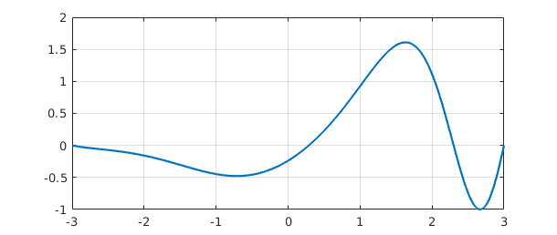
We confirm that the computed $u$ satisfies the differential equation to high accuracy:
norm(L(u) - 1)
ans =
1.695997141071460e-11
Let's change the right-hand boundary condition to $u'=0$ and see how this changes the solution:
L.rbc = @(u) diff(u); u = L\1; hold on, plot(u, 'r', LW, 2)
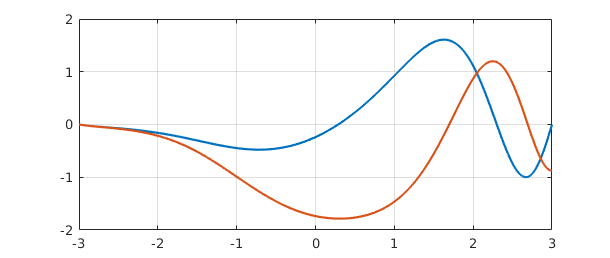
An equivalent to backslash is the solvebvp command.
v = solvebvp(L, 1); norm(u - v)
ans =
0
A command like L.bc=100 imposes the corresponding numerical Dirichlet condition at both ends of the domain:
L.bc = 100; hold off, plot(L\1, LW, 2), grid on
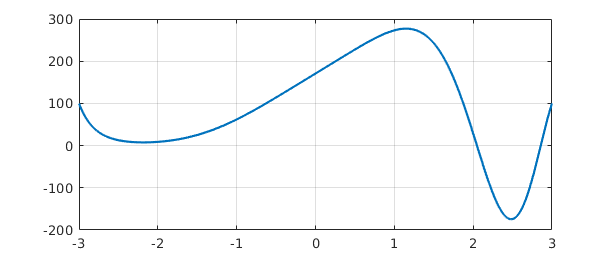
Boundary conditions can also be specified in a single line, as noted above:
L = chebop( @(x,u) diff(u,2)+10000*u, [-1,1], 0, @(u) diff(u) );
Thus it is possible to set up and solve a differential equation and plot the solution with a single line of Chebfun:
plot( chebop(@(x,u) diff(u,2)+50*(1+sin(x)).*u,[-20,20],0,0)\1 )
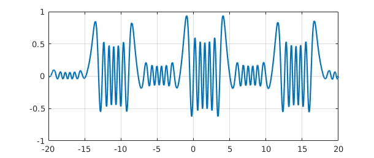
When Chebfun solves differential or integral equations, the coefficients may be piecewise smooth rather than globally smooth. For example, here is a 2nd order problem involving a coefficient that jumps from $+1$ (oscillation) for $x<0$ to $-1$ (growth/decay) for $x>0$:
L = chebop(-60, 60); L.op = @(x,u) diff(u,2) - sign(x).*u; L.lbc = 1; L.rbc = 0; u = L\0; plot(u, LW, 2), grid on
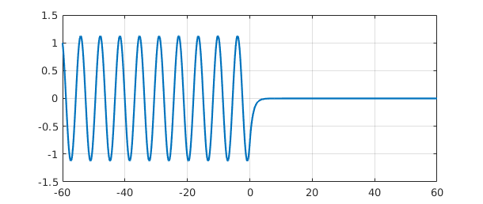
Further examples of Chebfun solutions of differential equations with discontinuous coefficients can be found in the Demos menu of chebgui.
Finally, what about periodic boundary conditions? If the boundary condition L.bc='periodic' is specified, Chebfun will discretize the problem by Fourier methods, seeking to find a periodic solution, provided that the right-side function is also periodic. (This feature was introduced in 2014.) Here is an example:
L = chebop(-pi,pi); L.op = @(x,u) diff(u,2) + diff(u) + 600*(1+sin(x)).*u; L.bc = 'periodic'; u = L\1; hold off, plot(u, LW, 2), grid on
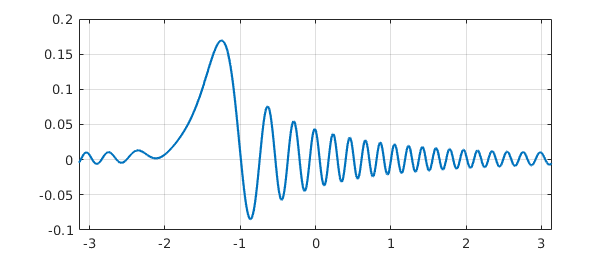
7.5 Eigenvalue problems: eigs
In MATLAB, eig finds all the eigenvalues of a matrix whereas eigs finds some of them. A differential or integral operator normally has infinitely many eigenvalues, so one could not expect an analog of eig for chebops. eigs, however, has been overloaded. Just like MATLAB eigs, Chebfun eigs finds six eigenvalues by default, together with eigenfunctions if requested. (For details see [Driscoll, Bornemann & Trefethen 2008].) Here is an example involving sine waves.
L = chebop( @(x,u) diff(u,2), [0, pi] ); L.bc = 0; [V, D] = eigs(L); diag(D) clf, plot(V(:,1:4), LW, 2), ylim([-1 1])
ans = -35.999999999996120 -24.999999999999030 -16.000000000001670 -9.000000000001151 -4.000000000001219 -1.000000000000424
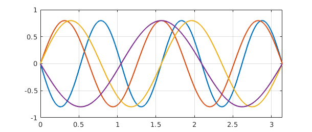
By default, eigs tries to find the six eigenvalues whose eigenmodes are "most readily converged to", which approximately means the smoothest ones. You can change the number sought and tell eigs where to look for them. Note, however, that you can easily confuse eigs if you ask for something unreasonable, like the largest eigenvalues of a differential operator.
Here we compute 10 eigenvalues of the Mathieu equation and plot the 9th and 10th corresponding eigenfunctions, known as an elliptic cosine and sine. Note the imposition of periodic boundary conditions.
q = 10;
A = chebop(-pi, pi);
A.op = @(x,u) diff(u,2) - 2*q*cos(2*x).*u;
A.bc = 'periodic';
[V, D] = eigs(A, 16, 'LR'); % eigenvalues with largest real part
d = diag(D); [d, ii] = sort(d, 'descend'); V = V(:, ii');
subplot(1,2,1), plot(V(:, 9), LW, 2)
ylim([-.8 .8]), title('elliptic cosine')
subplot(1,2,2), plot(V(:,10), LW, 2)
ylim([-.8 .8]), title('elliptic sine')
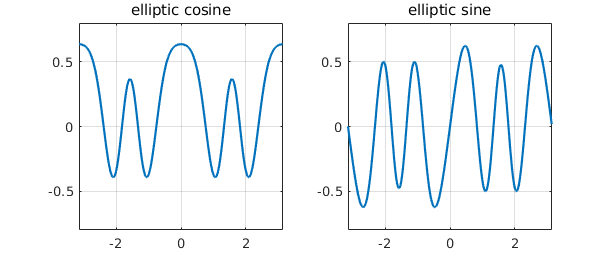
eigs can also solve generalized eigenproblems, that is, problems of the form $Au = \lambda Bu$. For these one must specify two linear chebops A and B, with the boundary conditions all attached to A. Here is an example of eigenvalues of the Orr-Sommerfeld equation of hydrodynamic linear stability theory at a Reynolds number close to the critical value for eigenvalue instability [Schmid & Henningson 2001]. This is a fourth-order generalized eigenvalue problem, requiring two conditions at each boundary.
Re = 5772;
B = chebop(-1, 1);
B.op = @(x,u) diff(u,2) - u;
A = chebop(-1, 1);
A.op = @(x,u) (diff(u,4) - 2*diff(u, 2) + u)/Re - ...
1i*(2*u + (1 - x.^2).*(diff(u, 2) - u));
A.lbc = [0; 0];
A.rbc = [0; 0];
lam = eigs(A, B, 50);
MS = 'markersize';
clf, plot(lam, 'r.', MS, 16), grid on, axis equal
spectral_abscissa = max(real(lam))
spectral_abscissa =
-7.824149349993639e-05
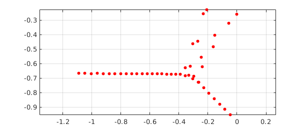
For eigenvalue problems of the 1D Schrodinger equation, try help quantumstates.
7.6 Exponential of a linear operator: expm
In MATLAB, expm computes the exponential of a matrix, and this command has been overloaded in Chebfun to compute the exponential of a linear operator. If $L$ is a linear operator and $E(t) = \exp(tL)$, then the partial differential equation $u_t = Lu$ has solution $u(t) = E(t)u(0)$. Thus by taking $L$ to be the 2nd derivative operator, for example, we can use expm to solve the heat equation $u_t = u_{xx}$:
A = chebop(@(x,u) diff(u,2), [-1, 1], 0);
f = chebfun('exp(-1000*(x+0.3).^6)');
clf, plot(f, 'r', LW, 2), hold on, c = [0.8 0 0];
for t = [0.01 0.1 0.5]
u = expm(A, t, f);
plot(u,'color', c, LW, 2), c = 0.5*c;
ylim([-.1 1.1])
end
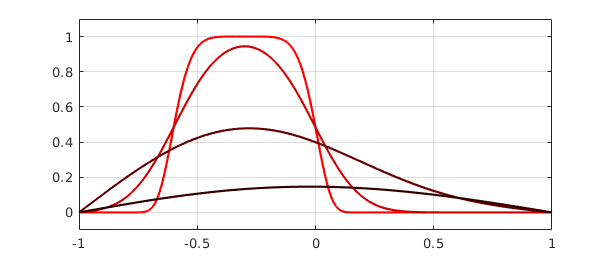
Here is a more fanciful analogous computation with a complex initial function obtained from the scribble command introduced in Chapter 5.
f = exp(.02i)*scribble('BLUR'); clf
D = chebop(@(x,u) diff(u,2), [-1 1]);
D.bc = 'neumann';
k = 0;
for t = [0 .0001 .001]
k = k + 1; subplot(3,1,k)
if t==0, u = f; else u = expm(D, t, f); end
plot(u, 'linewidth', 3, 'color', [.6 0 1])
xlim(1.05*[-1 1]), axis equal
text(0.01, .46, sprintf('t = %6.4f', t), 'fontsize', 10), axis off
end
7.7 Algorithms: rectangular collocation vs. ultraspherical
Let us say a word about how Chebfun carries out these computations. Until Chebfun version 5, the methods involved were all Chebyshev spectral methods on automatically chosen grids. The general ideas are presented in [Trefethen 2000], [Driscoll, Bornemann & Trefethen 2008], and [Driscoll 2010], but Chebfun actually uses modifications of these methods described in [Driscoll & Hale 2014] and [Xu & Hale 2014] involving a novel mix of Chebyshev grids of the first and second kinds. These rectangular collocation or Driscoll-Hale spectral discretizations start from the idea that a differential operator is discretized as a rectangular matrix that maps from one grid to another with fewer points. The matrix is then made square again by the incorporation of boundary conditions. When a differential equation is solved in Chebfun, the problem is solved on a sequence of grids of size $33, 65, \dots$ until convergence is achieved in the usual Chebfun sense defined by decay of Chebyshev expansion coefficients.
One matter you might not guess was challenging is the determination of whether or not an operator is linear! This is important since if an operator is linear, special actions are possible possible such as application of eigs and expm and solution of differential equations in a single step without iteration. Chebfun includes special devices to determine whether a chebop is linear so that these effects can be realized [Birkisson 2014].
As mentioned, the discretization length of a Chebfun solution is chosen automatically according to the intrinsic resolution requirements. However, the matrices that arise in Chebyshev spectral methods are notoriously ill-conditioned. Thus the final accuracy in solving differential equations in Chebfun's default mode is rarely close to machine precision. Typically one loses two or three digits for second-order differential equations and five or six for fourth-order problems.
This problem of ill-conditioning was one of the motivations for the development of the other discretization method used by Chebfun, known as ultraspherical or Olver-Townsend spectral discretizations [Olver & Townsend 2013]. Here, rather than a single Chebyshev basis, several different bases of ultraspherical polynomials are used, depending on the order of the differential operator. This leads to better conditioned matrices that are also sparser, especially for linear problems with constant or smooth coefficients. By default, Chebfun uses rectangular collocation discretizations, but most problems can equally be solved in ultraspherical mode, and the results will sometimes be more accurate. For example, here we solve a problem whose exact solution is $\cos(x)$ in the rectangular fashion and check the error at $x=5$:
tic u = chebop(@(x, u) diff(u, 2) + u, [-10,10], cos(10), cos(10))\0; toc error = u(5) - cos(5)
Elapsed time is 0.101609 seconds.
error =
-5.162537064506978e-15
We can switch to ultraspherical mode and run the same experiment again like this:
cheboppref.setDefaults('discretization', @ultraS)
tic
u = chebop(@(x,u) diff(u,2) + u, [-10,10], cos(10), cos(10))\0;
toc
error = u(5) - cos(5)
cheboppref.setDefaults('factory') % reset to standard mode
Elapsed time is 0.478815 seconds.
error =
-1.387778780781446e-15
7.8 Block operators and systems of equations
Some problems involve several variables coupled together. In Chebfun, these are treated with the use of quasimatrices, that is, chebfuns with several columns, as described in Chapter 6.
For example, suppose we want to solve the coupled system $u'=v$, $v'=-u$ with initial data $u=1$ and $v=0$ on the interval $[0,10\pi]$. (This comes from writing the equation $u''=-u$ in first-order form, with $v=u'$.) We can solve the problem like this:
L = chebop(0, 10*pi); L.op = @(x, u, v) [diff(u) - v; diff(v) + u]; L.lbc = @(u, v) [u-1; v]; rhs = [0; 0]; U = L\rhs;
The solution U is an $\infty\times 2$ Chebfun quasimatrix with columns u=U(:,1) and v=U(:,2). Here is a plot:
clf, plot(U)
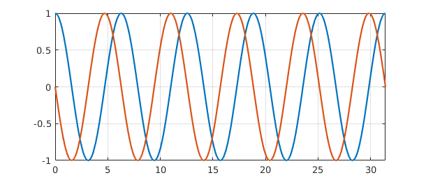
The overloaded spy command helps clarify the structure of this operator we just made use of:
spy(L)
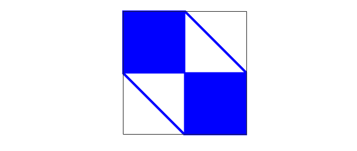
This image shows that $L$ maps a pair of functions $[u;v]$ to a pair of functions $[w;y]$, where the dependences of $w$ on $u$ and $y$ on $v$ are global (because of the derivative) whereas the dependences of $w$ on $v$ and $y$ on $u$ are local (diagonal).
To illustrate the solution of an eigenvalue problem involving a block operator, we can take much the same idea. The eigenvalue problem $u''=c^2u$ with $u=0$ at the boundaries can be written in first order form as $u'=cv$, $v'=cu$.
L = chebop(0, 10*pi); L.op = @(x, u, v) [diff(v); diff(u)]; L.lbc = @(u,v) u; L.rbc = @(u,v) u;
The operator in this eigenvalue problem has a simpler structure than before:
clf, spy(L)
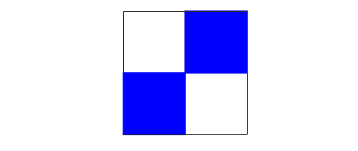
Here are the first 7 eigenvalues:
[eigenfunctions,D] = eigs(L, 7); eigenvalues = diag(D)
eigenvalues = 0.000000000000001 + 0.000000000000000i -0.000000000000000 - 0.100000000000000i -0.000000000000000 + 0.100000000000000i 0.000000000000001 - 0.200000000000000i 0.000000000000001 + 0.200000000000000i 0.000000000000000 - 0.300000000000001i 0.000000000000000 + 0.300000000000001i
The eigenfunctions result has the first seven eigenfunctions for each of the two variables, u and v:
eigenfunctions
eigenfunctions =
2 x 7 chebmatrix of block types:
Columns 1 through 6
'chebfun' 'chebfun' 'chebfun' 'chebfun' 'chebfun' 'chebfun'
'chebfun' 'chebfun' 'chebfun' 'chebfun' 'chebfun' 'chebfun'
Column 7
'chebfun'
'chebfun'
It's often convenient to convert a chebmatrix result to a chebfun. In this case, we want to extract the $u$ and $v$ variables separately:
U = chebfun( eigenfunctions(1,:) ); V = chebfun( eigenfunctions(2,:) ); size(V)
ans = Inf 7
Both U and V are complex, but only because of roundoff:
normRealU = norm(real(U)) normImagV = norm(imag(V))
normRealU =
1.362577784903978e-11
normImagV =
1.362800902246168e-11
This fact makes it easy to plot them.
subplot(2,1,1)
plot(imag(U)), ylabel('imag(U)')
subplot(2,1,2)
plot(real(V)), ylabel('real(V)')
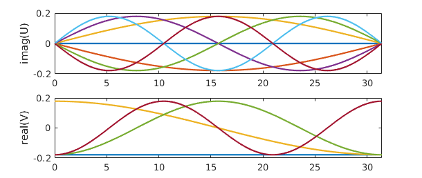
7.9 Nonlinear equations by Newton iteration
As mentioned at the beginning of this chapter, nonlinear differential equations are discussed in Chapter 10. As an indication of some of the possibilities, however, we now illustrate how a sequence of linear problems may be useful in solving nonlinear problems. For example, the nonlinear BVP $$ 0.001u'' - u^3 = 0,\qquad u(-1)=1,~~ u(1)=-1 $$ could be solved by Newton iteration as follows.
L = chebop(-1, 1);
L.op = @(x,u) 0.001*diff(u, 2);
J = chebop(-1, 1);
x = chebfun('x');
u = -x; nrmdu = Inf;
while nrmdu > 1e-10
r = L*u - u.^3;
J.op = @(du) .001*diff(du, 2) - 3*u.^2.*du;
J.bc = 0;
du = -(J\r);
u = u + du; nrmdu = norm(du)
end
clf, plot(u)
nrmdu =
0.260668532007021
nrmdu =
0.164126069559937
nrmdu =
0.098900892365439
nrmdu =
0.053787171683933
nrmdu =
0.021518152858429
nrmdu =
0.003586696693250
nrmdu =
8.951602488809509e-05
nrmdu =
5.357404819950645e-08
nrmdu =
1.810700324540136e-14
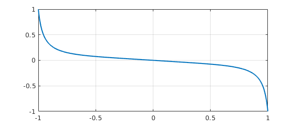
Note the beautifully fast convergence, as one expects with Newton's method. The chebop J defined in the while loop is a Jacobian operator (=Frechet derivative), which we have constructed explicitly by differentiating the nonlinear operator defining the ODE. In Section 10.4 we shall see that this whole Newton iteration can be automated by use of Chebfun's "nonlinear backslash" capability, which utilizes automatic differentiation to construct the Frechet derivative automatically. In fact, all you need to type is
N = chebop(-1, 1); N.op = @(x,u) 0.001*diff(u, 2) - u.^3; N.lbc = 1; N.rbc = -1; v = N\0;
The result is the same as before to many digits of accuracy:
norm(u - v)
ans =
1.200346949179719e-12
7.10 BVP systems with unknown parameters
Sometimes ODEs or systems of ODEs contain unknown parameter values that must be computed as part of the solution. An example of this is MATLAB's built-in mat4bvp example. These parameters can always be included in a system as unknowns with zero derivatives, but this can be computationally inefficient. Chebfun allows the option of explicit treatment of the parameters. Often the dependence of the solution on these parameters is nonlinear (as in the case below), and this discussion might better have been left to Chapter 10, but since, from the user perspective, there is little difference in this case, we include it here.
Below is an example of such a parameterised problem, which represents a linear pendulum with a forcing sine-wave term of an unknown frequency $T$. The task is to compute the solution for which $$ u(-\pi) = u(\pi) = u'(\pi) = 1. $$
N = chebop(@(x, u , T) diff(u,2) - u - sin(T.*x/pi), [-pi pi]); N.lbc = @(u,T) u - 1; N.rbc = @(u,T) [u - 1; diff(u) - 1]; uT = N\0;
Here, the output uT is a chebmatrix -- an object that is amongst other features able to vertically concatenate chebfuns and scalar. The first entry corresponds to the variable $u$ while the second is the scalar $T$. We could access the elements of uT via curly-brackets syntax,
u = uT{1}; T = uT{2};
and another method is to use Chebfun's overloaded deal command:
[u,T] = deal(uT);
Better still, one can solve the problem originally with multiple outputs, like this:
[u,T] = N\0; T plot(u)
T = 0.005438812795289
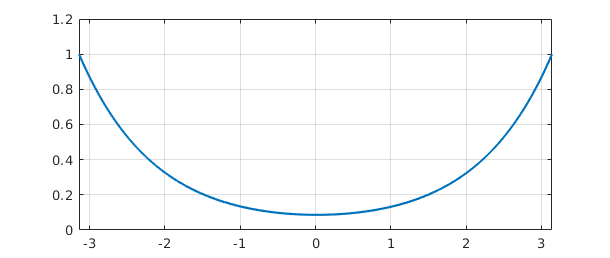
As the system is nonlinear in $T$, we can expect that there will be more than one solution. Indeed, if we choose a different initial guess for $T$, we can converge to one of these.
N.init = [chebfun(1, [-pi pi]); 4]; [u,T] = N\0; T = T(1) plot(u)
T = 4.044049959218973
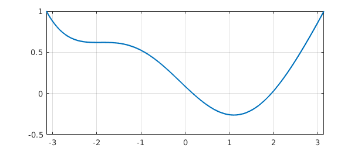
7.11 References
[Birkisson 2014] A. Birkisson, Numerical Solution of Nonlinear Boundary Value Problems for Ordinary Differential Equations in the Continuous Framework, D. Phil. thesis, University of Oxford, 2014.
[Birkisson & Driscoll 2011] A. Birkisson and T. A. Driscoll, "Automatic Frechet differentiation for the numerical solution of boundary-value problems", ACM Transactions on Mathematical Software, 38 (2012), 1-26.
[Driscoll 2010] T. A. Driscoll, "Automatic spectral collocation for integral, integro-differential, and integrally reformulated differential equations", Journal of Computational Physics, 229 (2010), 5980-5998.
[Driscoll, Bornemann & Trefethen 2008] T. A. Driscoll, F. Bornemann, and L. N. Trefethen, "The chebop system for automatic solution of differential equations", BIT Numerical Mathematics, 46 (2008), 701-723.
[Driscoll & Hale 2014] T. A. Driscoll and N. Hale, "Rectangular spectral collocation", IMA Journal of Numerical Analysis, to appear.
[Fornberg 1996] B. Fornberg, A Practical Guide to Pseudospectral Methods, Cambridge University Press, 1996.
[Olver & Townsend 2013] S. Olver and A. Townsend, "A fast and well-conditioned spectral method," SIAM Review, 55 (2013), 462-489.
[Schmid & Henningson 2001] P. J. Schmid and D. S. Henningson, Stability and Transition in Shear Flows, Springer, 2001.
[Trefethen 2000] L. N. Trefethen, Spectral Methods in MATLAB, SIAM, 2000.
[Trefethen, Birkisson & Driscoll 2016] L. N. Trefethen, A. Birkisson, and T. A. Driscoll, Exploring ODEs, textbook in preparation.
[Xu & Hale 2015] K. Xu and N. Hale, "Explicit construction of rectangular differentiation matrices", IMA Journal of Numerical Analysis 36 (2016), 618-632.